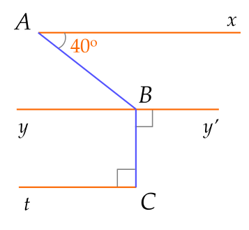

Câu 2. Đại số
Phần I — Trắc nghiệm chọn một phương án
0,17 điểm
So sánh $-3,5$ và $-3,215$ ta có
Câu 13. Đại số
Phần II — Trắc nghiệm đúng hoặc sai
0,64 điểm
Kí hiệu $ℕ, \, ℤ, \, ℚ, \, \mathbb{I}; \, ℝ$ theo thứ tự là tập hợp các số tự nhiên, tập hợp các số nguyên, tập hợp các số hữu tỉ, tập hợp các số vô tỉ và tập hợp các số thực.
(Nhấp vào ô màu vàng để chọn đúng / sai)
Mỗi ý a), b), c)… là một phát biểu độc lập: nhấp vào ô để chọn Đúng/Sai,
0,16 điểm mỗi ý.
Câu 14. Hình họcCó vẽ hình
Phần II — Trắc nghiệm đúng hoặc sai
0,64 điểm
Cho hình vẽ, biết $\widehat{A}=40°,\,\widehat{ABy'}=140°$ .

(Nhấp vào ô màu vàng để chọn đúng / sai)
Mỗi ý a), b), c)… là một phát biểu độc lập: nhấp vào ô để chọn Đúng/Sai,
0,16 điểm mỗi ý.
Câu 15. Đại số
Phần III — Trắc nghiệm trả lời ngắn
0,34 điểm
Tính hợp lí: $7,3 × 10,5 + 7,3 × 15 + 2,7 × 10,5 + 15 × 2,7$ .
Trả lời ngắn — gõ kết quả, kèm đơn vị nếu đề hỏi đơn vị.
Câu 16. Đại số
Phần III — Trắc nghiệm trả lời ngắn
0,34 điểm
Tính: $B=\dfrac{{{\Big(\dfrac{2}{3} \Big)}^{3}} × {{\Big(-\dfrac{3}{4} \Big)}^{2}}× {{(-1)}^{2011}}}{{{\Big(\dfrac{2}{5} \Big)}^{2}} × {{\Big(-\dfrac{5}{12} \Big)}^{3}}}$ , ghi kết quả dưới dạng số thập phân.
Trả lời ngắn — gõ kết quả, kèm đơn vị nếu đề hỏi đơn vị.
Câu 17. Hình họcKhông vẽ hình
Phần III — Trắc nghiệm trả lời ngắn
0,33 điểm
Cho $\widehat{mOn}=150°$ , vẽ $\widehat{nOe}$ là góc kề bù với $\widehat{mOn}$ . Gọi $Oc$ là tia phân giác của $\widehat{nOe}$ . Tính số đo của $\widehat{cOm}$ , đơn vị độ.
Trả lời ngắn — gõ kết quả, kèm đơn vị nếu đề hỏi đơn vị.
Câu 18. Đại số
Phần III — Trắc nghiệm trả lời ngắn
0,33 điểm
Học kì I, số học sinh giỏi của lớp 7A bằng $\dfrac{2}{7}$ số học sinh còn lại. Sang học kì II, số học sinh giỏi tăng thêm $8$ bạn (số học sinh cả lớp không đổi) nên số học sinh giỏi bằng $\dfrac{2}{3}$ số còn lại. Học kì I, lớp 7A có bao nhiêu học sinh giỏi?
Trả lời ngắn — gõ kết quả, kèm đơn vị nếu đề hỏi đơn vị.
Câu 19. Đại số
Phần IV — Tự luận
1,34 điểm
Thực hiện phép tính:
i) $\dfrac{5}{3}-\Big(\dfrac{7}{12}-\dfrac{2}{3} \Big)+\dfrac{1}{3}$ .
ii) $7\dfrac{3}{5}-\Big(2\dfrac{5}{7}+5\dfrac{3}{5} \Big)$ .
Bài làm của bạn:
Câu 20. Đại số
Phần IV — Tự luận
1,34 điểm
Tìm số $x$ thỏa mãn:
i) $\sqrt{1 \, 681}+x=\sqrt{961}$ .
ii) $x\,:\,2\sqrt{68}=3\sqrt{3}$ .
Bài làm của bạn:
Câu 21. Hình họcKhông vẽ hình
Phần IV — Tự luận
1,34 điểm
Viết giả thiết kết luận và chứng minh định lí sau: "Nếu hai đường thẳng $xx'$ , $yy'$ cắt nhau tại $O$ và góc $xOy$ vuông thì các góc $\widehat{yOx'}$ , $\widehat{x'Oy'}$ , $\widehat{yOx}$ đều là góc vuông".
Bài làm của bạn:
Câu 22. Đại số
Phần IV — Tự luận
1,34 điểm
Hai người thợ cùng làm một công việc. Nếu làm riêng thì người thứ nhất phải mất $3$ giờ, người thứ hai phải mất $5$ giờ mới hoàn thành công việc. Nếu làm chung trong $45$ phút thì hai người làm được mấy phần công việc?
Bài làm của bạn: